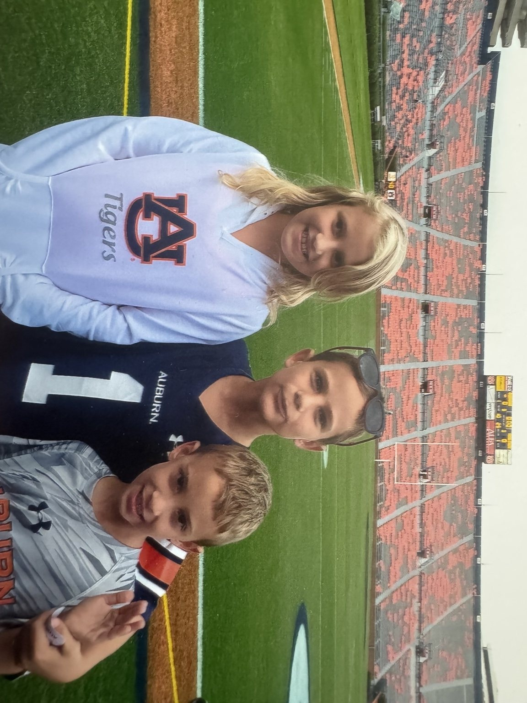

Comics
Key issues, graded books and permanent collector records.
Open comics →A family collection built over time — comics, cards, memorabilia and the stories attached to them. This is the front door to the vault: start with the people and the memories, then choose where you want to explore.

No display cases here — just a clean gateway into the different parts of the collection.
Key issues, graded books and permanent collector records.
Open comics →Player cards cataloged by permanent SKU, set, year, team and actual front/back photography.
Open baseball cards →Signed pieces and collectible objects as the physical vault continues to grow.
Browse full inventory →The family trips, games, photographs, stories and box scores connected to the collection.
Open memories →